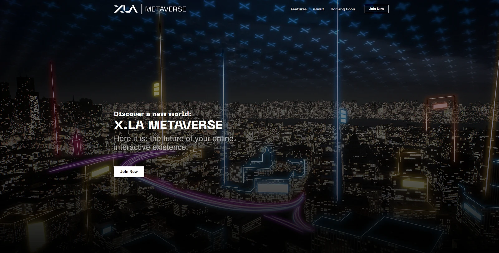

Коммерческая задача
Проект был рассчитан на авторов интеллектуальной собственности. Публичный анонс описывал распределение доходов между участниками при использовании и лицензировании их работ. Моя часть работы касалась правил, по которым коммерческая модель должна была работать в продукте.
Вернуться к проектам